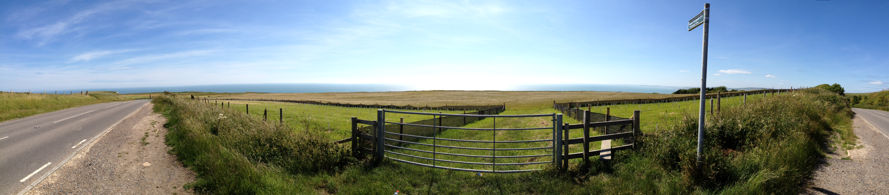

Curriculum Vitae

You can find an expanded version of my C.V. here.
Academic Malarkey
Published journal papers:
- Wilkin, J.; Biggs, E.; Tatem, A.J. Measurement of Social Networks for Innovation within Community Disaster Resilience. Sustainability 2019, 11, 1943.
- Chughtai, H. et al. Demarginalizing interdisciplinary in IS research: interdisciplinary research in marginalization. Communications of the Association for Information Systems 2019, 44 (Contributing author).
Papers presented at international conferences:
- NetMob 2019, University of Oxford, ‘Mapping Geographical Communities using Call Detail Records.’
- Geo4Dev 2018, USC Berkeley, ‘Opportunities for disaster resilience measurement using innovative datasets’.
- Short Course on Surveillance, Modelling and Visualisation, 2015, Interspill, Amsterdam, ‘Satellite Remote Sensing for Oil Spill Response’.
Pending journal papers:
- Wilkin, J.; Biggs, E.; Brooks, C.; Ruktanonchai, N.; Tatem, A.J. Mapping geographical communities in Nepal using Call Detail Records. (Submitted).
- Wilkin, J.; Biggs, E.; Pezzulo, C.; Tatem, A.J. Changing geo-demographics of mobile phone ownership in Nepal 2006-2016. (Submitted).
- Wilkin, J.; Biggs, E.; Tatem, A.J. Social connectivity and disaster resilience: analysis of social networks in Nepal using Call Detail Records. (In progress).
Industry reports:
- IPIECA/OGP, ‘Satellite remote sensing of oil spills at sea’. Good Practice Guide series, 2016. Sole author.
Awards and grants:
- 2019 Esri UK Young Scholar Prize
- 2019 University of Southampton Doctoral College Director’s Award for Education 2017 World University Network Research Mobility Programme Grant
- 2013 Esri UK Prize for best performing Geographical Information Management student 2012 GeoPlan Scholarship Prize
- 2009 Lydia Press Research Grant
Employment
Lecturer in Geographic Data Science, University College London, London, UK (2020-2021)
PhD in Geography and Computer Science, University of Southampton, UK (2015-2020)
Research Assistant (Public Health Analysis), University of Southampton, UK (2016-2017)
GIS Analyst, British Red Cross and Médecins Sans Frontières UK, UK (2013-2015)
GIS Consultant, Oil Spill Response Joint Industry Project, UK (2013-2015)
Research Intern, Ordnance Survey, UK (2012)
Technical Development Intern, Oil Spill Response Ltd, UK (2011)
Education
PhD in Geography, School of Geography and the Environment, University of Southampton (2015-2020)
MSc in Geographical Information Management, Cranfield University (2012-2013)
BA in Geography, St. Peter’s College, University of Oxford (2008-2011)